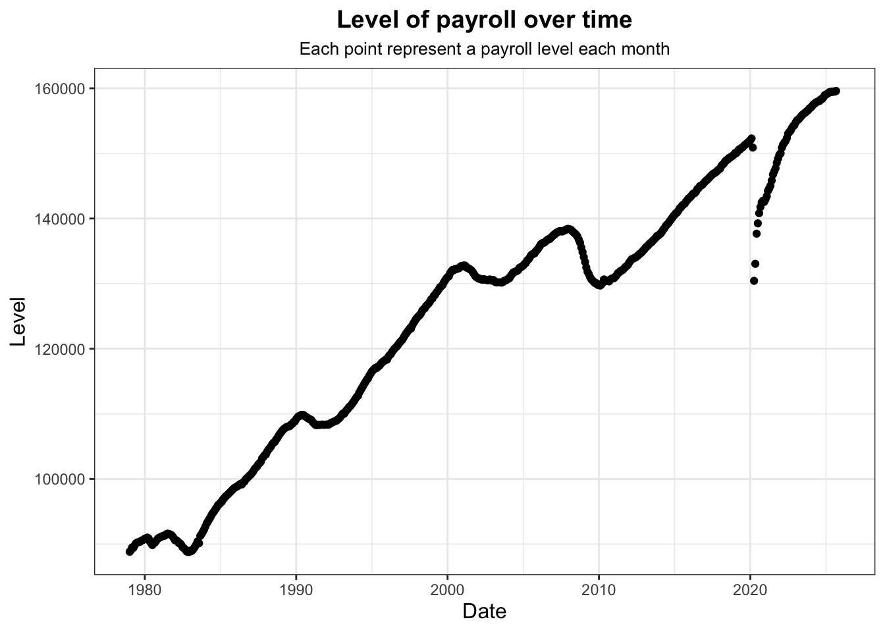
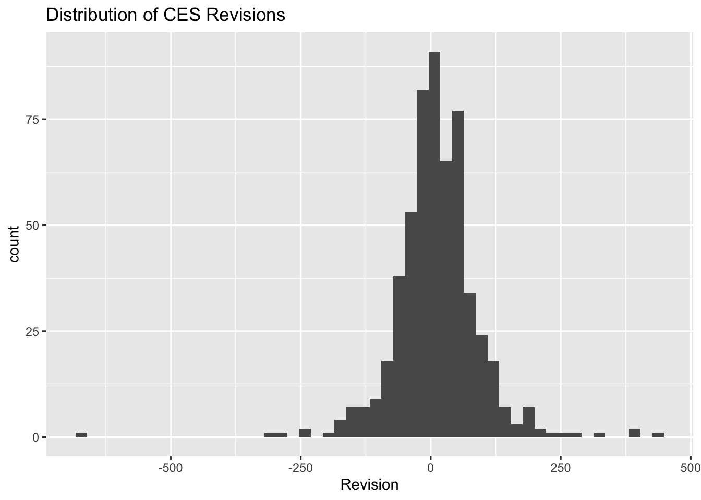
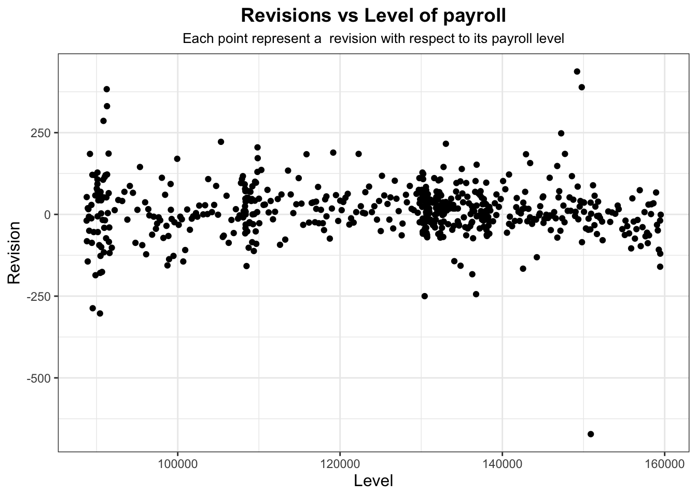
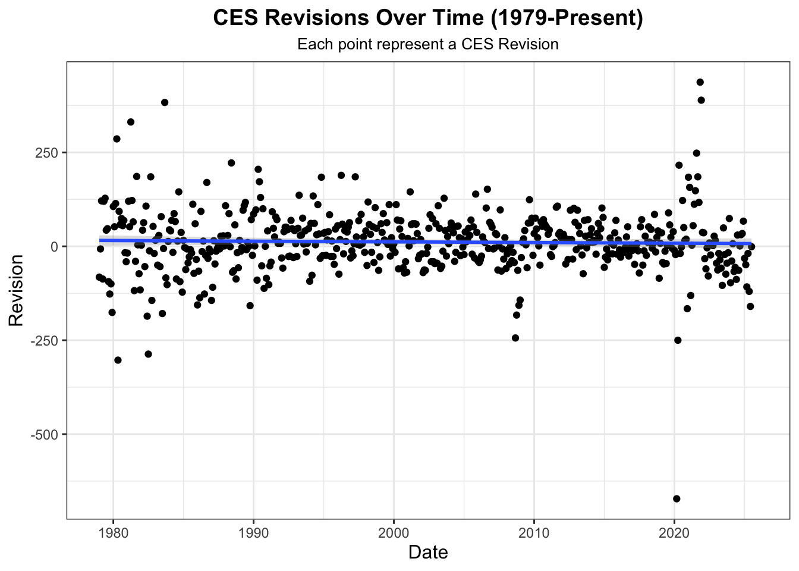
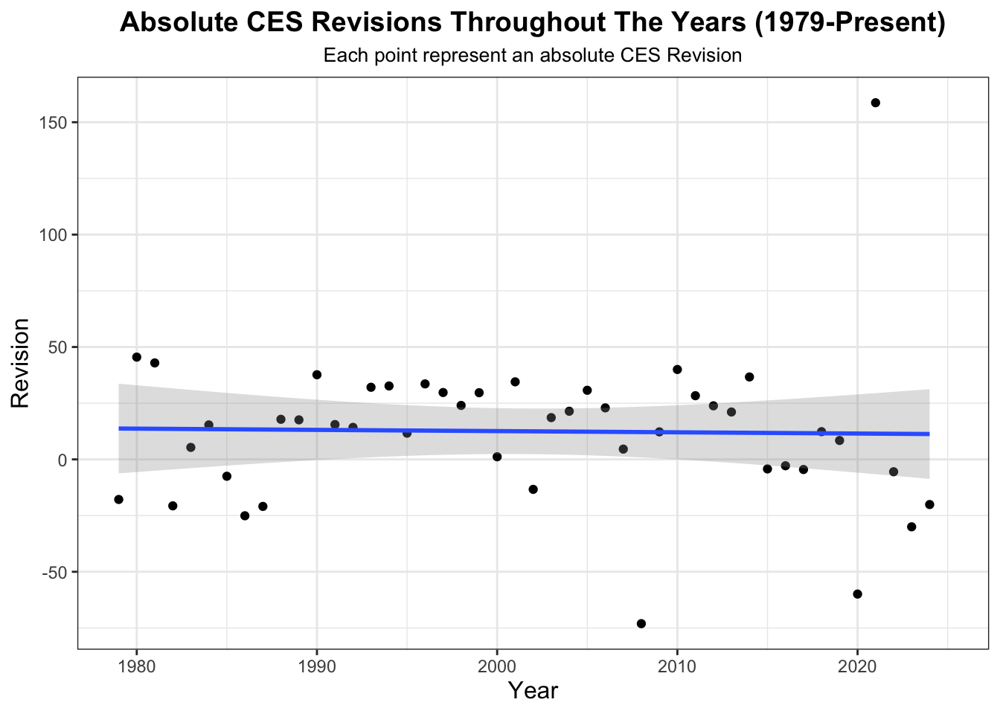
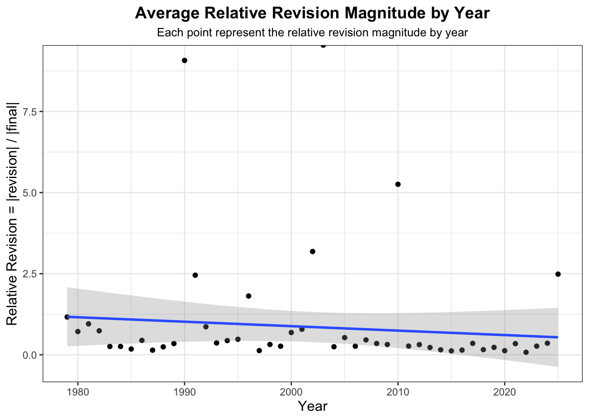
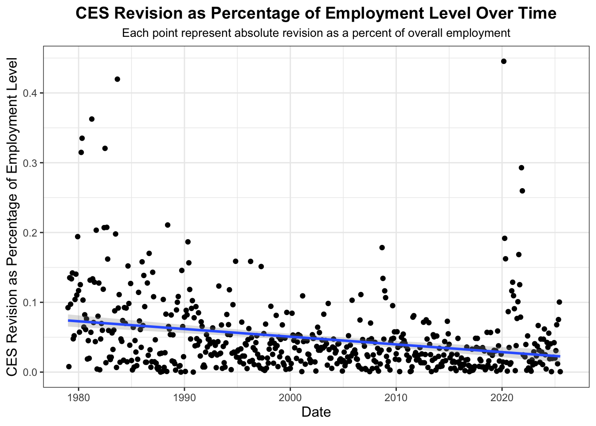
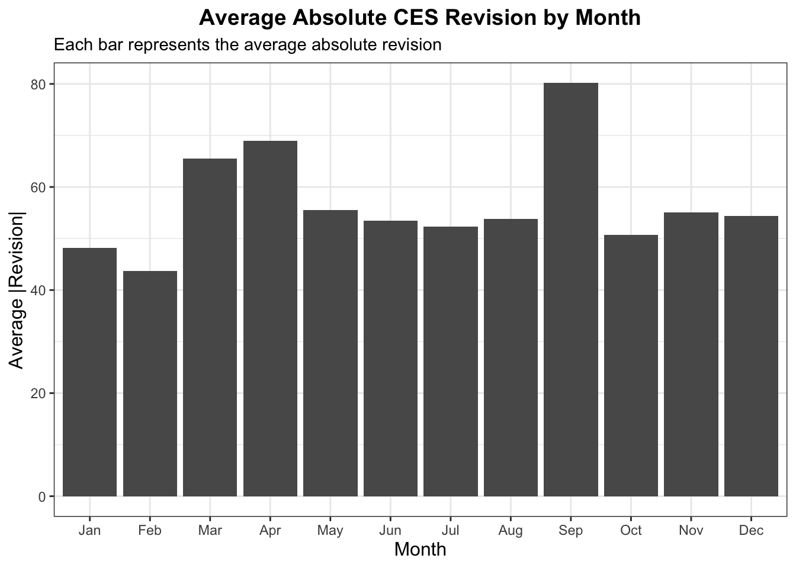
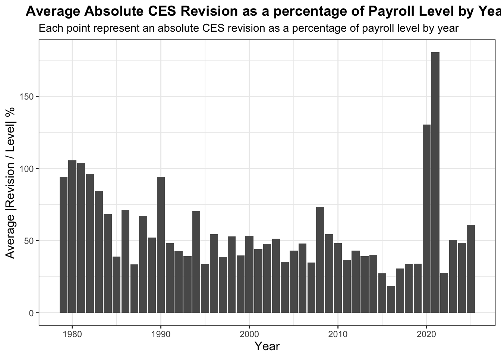

On August 1, 2025, President Donald Trump fired Dr. Erika McEntarfer, the Commissioner of Labor Statistics. As head of the Bureau of Labor Statistics (BLS), Dr. McEntarfer oversaw the statistical program responsible for producing the Monthly Current Employment Statistics (CES) report—commonly known as the “jobs number.” Few economic indicators carry more political and financial weight: monthly payroll employment figures influence market expectations, inform policy debates, and serve as a public barometer for the health of the U.S. economy.
The President’s action sparked immediate criticism from economists who were concerned political interference could undermine trust in the federal statistical system. Those in favor of the dismissal, however, pointed to the size and direction of recent CES revisions as evidence of methodological failure or mismanagement. Those against the dismissal countered that revisions are a routine and necessary component of survey-based estimation and arise largely from late-arriving administrative data, not political influence.
The resulting controversy raises an important question: Do recent CES revisions meaningfully differ from historical patterns, and do they support or contradict the political claims made about BLS accuracy? In this mini-project, I address this question through a statistical fact-check. Using the tools developed throughout the course, including web data acquisition, HTML parsing, data cleaning, visualization, and hypothesis testing, I evaluate whether the evidence justifies claims of unusual or politically suspicious behavior in recent CES estimates.
The goal of this project is not to make claims about the political environment but to present facts through data. By examining both absolute and relative measures of revision size, as well as the distribution of revisions over time, this analysis aims to provide a transparent assessment of the accuracy and behavior of CES reporting.
R Code
library <-function(pkg){## Mask base::library() to automatically install packages if needed## Masking is important here so downlit picks up packages and links## to documentation pkg <-as.character(substitute(pkg))options(repos =c(CRAN ="https://cloud.r-project.org"))if(!require(pkg, character.only=TRUE, quietly=TRUE)) install.packages(pkg)stopifnot(require(pkg, character.only=TRUE, quietly=TRUE))}library(fs)library(httr2)library(rvest)library(dplyr)library(tidyr)library(stringr)library(lubridate)library(purrr)library(infer)library(ggplot2)library(DT)library(scales)# Format column titles (remove underscores → Title Case)format_titles <-function(df) {colnames(df) <-colnames(df) |>str_replace_all("_", " ") |>str_to_title() df}# Format numeric columns to 3 decimalsround_numeric_cols <-function(df, digits =3) { df |>mutate(across(where(is.numeric), ~round(.x, digits)))}# Universal CES summary table display show_ces_table <-function(df,highlight_col =NULL,highlight_value =NULL,pretty_names =TRUE,n =10) {# Round numeric columns df <-round_numeric_cols(df)# Optionally prettify column namesif (pretty_names) { df <-format_titles(df) } dt <-datatable( df |>head(n),options =list(dom ="tip",pageLength = n# no autoWidth, no scrollX, no manual widths → DT handles alignment ),class ="compact stripe hover",rownames =FALSE )# Optional row highlightingif (!is.null(highlight_col) &&!is.null(highlight_value)) { dt <- dt |>formatStyle( highlight_col,target ="row",backgroundColor =styleEqual(highlight_value, "lightcoral") ) } dt}
Data Acquisition
This analysis will involve two separate data sources:
Final CES level estimates of total nonfarm payroll employment (seasonally adjusted), and
Cycle-to-cycle revisions of CES estimates (Third - First)
To obtain the full history of CES employment levels, I will replicate a form submission used by the web interface by building a httr2 POST request with the same parameters the browser sends when the user selects “Total Nonfarm Employment, Seasonally Adjusted” and requests data from 1979 onward. I then extract the HTML table containing the CES monthly employment values, convert it into a tidy R data frame, clean column names and row formatting and produce a clean dataset for analysis.
This dataset will the guide the exploratory visualizations in Task 3 and the statistical inference in Task 4 and Task 5.
R Code
# copy browser's POST request using httr2html_req <-request("https://data.bls.gov/pdq/SurveyOutputServlet") |>req_method("POST") |>req_body_form(series_id ="CES0000000001",years_option ="specific_years",from_year ="1979",to_year ="2025") |>req_perform() |>resp_check_status() |>resp_body_html()# we extract HTML table using rvestpayroll <- html_req |>html_element("table.regular-data") |>html_table()show_ces_table(payroll)
In addition to the final CES employment levels, we will retrieve corresponding cycle-to-cycle CES revisions, which indicate how the initial estimates of monthly nonfarm payroll employment compare to the final estimates with updated administrative records.
These tables contain three important observations for each month: - Original (first-release CES estimate) - Final (third-release, revised CES estimate) - Revision (Final - Original)
With both datasets, final CES levels and CES revisions, cleaned and structured, I merged them by month into one dataset containing, for each month from January 1979 to June 2025:
The final employment level
The original employment estimate
The revision amount
R Code
# join Final CES levels and revisions dataces_payroll_with_revisions <-inner_join(total_nonfarm_payroll, ces_revisions, by="date")show_ces_table(ces_payroll_with_revisions)
Exploration:
Let’s now conduct visual and quantitative EDA to better understand long-run patterns in payroll employment estimation.
First, we visualize a time series of total nonfarm payroll employment (final levels):
R Code
# Payroll level over timeggplot(data = ces_payroll_with_revisions, aes(x = date, y = level)) +geom_point(alpha =1) +xlab("Date") +ylab("Level") +labs(title ="Level of payroll over time",subtitle ="Each point represent a payroll level each month" ) +theme_bw() +theme(plot.subtitle =element_text(size =10, hjust =0.5),plot.title =element_text(size =14, face ="bold", hjust =0.5),axis.title =element_text(size =12) )

We can also visualize the distribution of CES revisions, which is approximately normal as expected!
R Code
# Distribution of revisionsggplot(data = ces_payroll_with_revisions, aes(revision)) +geom_histogram(bins =50) +labs(title ="Distribution of CES Revisions",x ="Revision")

We could visualize the relationship between revisions and total nonfarm payroll employment, although not much information is provided except that most of the data lies in a random fashion along a revision of 0 with certain outliers.
R Code
# Payroll level vs revisionggplot(data = ces_payroll_with_revisions, aes(x = level, y = revision)) +geom_point(alpha =1) +#geom_smooth(method = "lm", se = TRUE, alpha = .3) +xlab("Level") +ylab("Revision") +labs(title ="Revisions vs Level of payroll",subtitle ="Each point represent a revision with respect to its payroll level" ) +theme_bw() +theme(plot.subtitle =element_text(size =10, hjust =0.5),plot.title =element_text(size =14, face ="bold", hjust =0.5),axis.title =element_text(size =12) )

We can consider what and when the largest revisions (positive and negative) happened in CES history.
R Code
#1. What and when were the largest revisions (positive and negative) in CES history?largest_revisions <- ces_payroll_with_revisions |># find the largest positive month of revisionsslice_max(revision, n =1, with_ties =FALSE)show_ces_table(largest_revisions)
R Code
neg_largest_revision <- ces_payroll_with_revisions |># find the largest negative month of revisionsslice_min(revision, n =1, with_ties =FALSE)show_ces_table(neg_largest_revision)
The largest positive revision happened in 2021-11-01 with a level of 1.49206^{5} and revision value of 437.
The largest negative revision happened in 2020-03-01 with a level of 1.50895^{5} and revision value of -672.
We can attribute the enormous negative revision to COVID-19 pandemic and the rebound positive revision to the positive effects after the pandemic.
Let’s visualize revisions over time to place our largest revisions into perspective through ECS history:
R Code
# CES Revisions Over Timeggplot(data = ces_payroll_with_revisions, aes(x = date, y = revision)) +geom_point(alpha =1) +geom_smooth(method ="lm", se =TRUE, alpha = .3) +xlab("Date") +ylab("Revision") +labs(title ="CES Revisions Over Time (1979-Present)",subtitle ="Each point represent a CES Revision" ) +theme_bw() +theme(plot.subtitle =element_text(size =10, hjust =0.5),plot.title =element_text(size =14, face ="bold", hjust =0.5),axis.title =element_text(size =12) )

We can even construct year-level and decade-level summaries of revision frequency:
R Code
#2. What fraction of CES revisions are positive in each year? In each decade?pos_fraction_revisions_year <- ces_payroll_with_revisions |>mutate(year =year(date)) |>group_by(year) |>summarize(frac_pos_revisions =mean(revision >0))show_ces_table(pos_fraction_revisions_year, highlight_col ="frac_pos_revisions")
With our data, we can even visualize absolute CES revisions from 1979-present:
R Code
yearly_ces_payroll_with_revisions <- ces_payroll_with_revisions |>mutate(year =year(date)) |>group_by(year) |>summarize(ave_revision =mean(revision))# CES Revisions Over Timeggplot(data = yearly_ces_payroll_with_revisions, aes(x = year, y = ave_revision)) +geom_point(alpha =1) +geom_smooth(method ="lm", se =TRUE, alpha = .3) +xlab("Year") +ylab("Revision") +labs(title ="Absolute CES Revisions Throughout The Years (1979-Present)",subtitle ="Each point represent an absolute CES Revision" ) +theme_bw() +theme(plot.subtitle =element_text(size =10, hjust =0.5),plot.title =element_text(size =14, face ="bold", hjust =0.5),axis.title =element_text(size =12) )

Let’s evaluate how relative CES revision magnitudes have changed over time
R Code
#3. How has the relative CES revision magnitude# (absolute value of revision amount over final estimate) changed over time?relative_revisions <- ces_payroll_with_revisions |>mutate(relative_revision =abs(revision/final),year =year(date)) |>group_by(year) |>summarize(relative_revision_magnitude =mean(relative_revision, na.rm =TRUE))show_ces_table(relative_revisions, highlight_col ="relative_revision_magnitude")
R Code
# visualize relative CES revision magnitude over time ggplot(data = relative_revisions, aes(x = year, y = relative_revision_magnitude)) +geom_point(alpha =1) +geom_smooth(method ="lm", se =TRUE, alpha = .3) +xlab("Year") +ylab("Relative Revision = |revision| / |final|") +labs(title ="Average Relative Revision Magnitude by Year",subtitle ="Each point represent the relative revision magnitude by year" ) +theme_bw() +theme(plot.subtitle =element_text(size =10, hjust =0.5),plot.title =element_text(size =14, face ="bold", hjust =0.5),axis.title =element_text(size =12) )

Let’s also observe trends in absolute percent revisions as a percentage of overall employment level over time:
R Code
#4. How has the absolute CES revision as a percentage of overall employment level changed over time?absolute_revisions <- ces_payroll_with_revisions |>mutate(year =year(date),absolute_revision =abs(revision),percent_abs_revision_level =100*abs(revision / level))show_ces_table(absolute_revisions, highlight_col ="percent_abs_revision_level")
R Code
# visualize absolute CES revision magnitude over time ggplot(data = absolute_revisions, aes(x = date, y = percent_abs_revision_level)) +geom_point(alpha =1) +geom_smooth(method ="lm", se =TRUE, alpha = .3) +xlab("Date") +ylab("CES Revision as Percentage of Employment Level") +labs(title ="CES Revision as Percentage of Employment Level Over Time",subtitle ="Each point represent absolute revision as a percent of overall employment" ) +theme_bw() +theme(plot.subtitle =element_text(size =10, hjust =0.5),plot.title =element_text(size =14, face ="bold", hjust =0.5),axis.title =element_text(size =12) )

We can observe how certain months may have systematically larger CES revisions while others have smaller CES revisions from our EDA.
R Code
#5. Are there any months that systematically have larger or smaller CES revisions?systematic_CES_revisions <- ces_payroll_with_revisions |>filter(!is.na(revision)) |>mutate(month =month(date),absolute_revision =abs(revision)) |>group_by(month) |>summarize(ave_abs_revision =mean(absolute_revision, rm.na=TRUE),ave_signed_revision =mean(revision, rm.na=TRUE) )systematic_CES_revisions <- systematic_CES_revisions |>mutate(month =factor(month,levels =1:12,labels = month.abb, # or month.name for full namesordered =TRUE) )largest_avg_month_revision <- systematic_CES_revisions |>slice_max(ave_abs_revision, n =1)smallest_avg_month_revision <- systematic_CES_revisions |>slice_min(ave_abs_revision, n =1)show_ces_table(largest_avg_month_revision)
Particularly April had the highest average absolute revisions with 80.1521739
R Code
show_ces_table(smallest_avg_month_revision)
and February had the smallest average absolute revisions with 43.7234043.
R Code
# Average Absolute CES Revision by Monthggplot(systematic_CES_revisions,aes(x = month, y = ave_abs_revision)) +geom_col() +labs(title ="Average Absolute CES Revision by Month",subtitle ="Each bar represents the average absolute revision",x ="Month",y ="Average |Revision|" ) +theme_bw() +theme(plot.title =element_text(size =14, face ="bold", hjust =0.5),axis.title =element_text(size =12) )

And from the analysis above, we can capture how large the average CES revision is in absolute terms and as a percent of that month’s CES level.
R Code
#6. How large is the average CES revision in absolute terms?# In terms of percent of that month’s CES level?overall_largest_ave_revisions <- ces_payroll_with_revisions |>mutate(absolute_revision =abs(revision),percent_revision_level =100* absolute_revision / level) |>summarise(ave_revisions =mean(revision, na.rm =TRUE), # average absolute revision by monthave_abs_revision =mean(absolute_revision, na.rm =TRUE),ave_pct_of_level =mean(percent_revision_level, na.rm =TRUE) # average absolute revision by month as a perc )show_ces_table(overall_largest_ave_revisions)
And we can capture how large the average CES revision is in absolute terms and as a percent of CES levels for each year:
R Code
yearly_revision_stats <- ces_payroll_with_revisions |>mutate(year =year(date),absolute_revision =abs(revision),percent_revision_level =100* absolute_revision / level) |>group_by(year) |>summarise(ave_revision =mean(revision, na.rm =TRUE), # average absolute revision by yearave_abs_revision =mean(absolute_revision, na.rm =TRUE),ave_pct_of_level =mean(percent_revision_level, na.rm =TRUE), # average absolute revision by yr as a perc.groups ="drop" )show_ces_table(yearly_revision_stats)
If the table is confusing, let’s visualize the average CES revision a as a percent of CES level over each year:
R Code
ggplot(yearly_revision_stats,aes(x = year, y = ave_abs_revision)) +geom_col() +labs(title ="Average Absolute CES Revision as a percentage of Payroll Level by Year",subtitle ="Each point represent an absolute CES revision as a percentage of payroll level by year",x ="Year",y ="Average |Revision / Level| %" ) +theme_bw() +theme(plot.title =element_text(size =14, face ="bold", hjust =0.5),axis.title =element_text(size =12) )

Task 4: Statistical Inference
While exploratory analysis can reveal meaningful patterns in CES revisions, formal statistical inference allows us to assess whether these differences are larger than would be expected from random sampling variation. Using the infer package, I conducted two hypothesis tests that directly relate to questions raised in the political debate surrounding CES accuracy: (1) whether larger employment swings are associated with larger revisions, and (2) whether the frequency of unusually large revisions has increased in recent years.
R Code
#Has the fraction of revisions of more than 1% increased post-2020?#threshold <- quantile(abs(ces_clean$percent_revision_level), 0.75, na.rm = TRUE)ces_clean <- ces_payroll_with_revisions |>#filter(!is.na(level), level != 0, !is.na(revision)) |>mutate(year =year(date),percent_revision_level =abs(revision / level),pre_post_2020 =if_else(year <2021, "pre_2020", "post_2020"),big_revision = percent_revision_level >0.0025 )big_revisions_test_2020 <- ces_clean |>prop_test( big_revision ~ pre_post_2020,order =c("pre_2020", "post_2020"),alternative ="greater" )show_ces_table(big_revisions_test_2020)
Has the frequency of unusually large revisions increased post-2020?
Recent commentary has claimed that revisions in the 2020s, especially following the pandemic, have become unusually large or unstable. To test this, I defined a “big revision” as any revision exceeding 0.25% of that month’s employment level, and compared the proportion of big revisions before and after 2020.
A two-sample proportion test yields z = 0.726 and p = 0.803.
The estimated fraction of big revisions was slightly higher in the post-2020 period, but the difference was not statistically significant (p = .7949). The confidence interval for the difference includes zero, indicating that the observed increase could be due to sampling variability. Thus, we fail to reject the null that unusually large revisions increased post-2020 at the 5% \alpha level.This supports the view that recent extreme revisions are isolated events rather than indicators of systemic deterioration in CES accuracy.
R Code
# Has the average revision increased post-2020?increased_ave_revision_test_2020 <- ces_payroll_with_revisions |>mutate(year =year(date),pre_post_2020 =if_else(year <2021, "pre_2020", "post_2020")) |>t_test( revision ~ pre_post_2020,order =c("pre_2020", "post_2020"),alternative ="two-sided" )show_ces_table(increased_ave_revision_test_2020)
Moreover, let’s evaluate whether CES revisions have become systematically larger in recent years by comparing the average revision before 2020 and average revision after 2020 using a two-sample t-test.
A two-sample t-test yields t = -0.149 and p = 0.882. The estimated difference in average revisions (post-2020 minus pre-2020) was −2.36 jobs, and the 95% confidence interval ranged from −33.9 to 29.2. Because the confidence interval includes zero and the p-value is not significant, we fail to reject the null hypothesis.
Therefore, there is no statistical evidence that the average CES revision has increased post-2020. This result supports the interpretation that recent prominent revisions reflect isolated events rather than a structural shift toward larger or more error-prone revisions in the CES reporting process.
Are CES Revisions Larger When the Underlying Change in Employment Levels Is Larger?
To evaluate whether months with unusually large changes in total nonfarm payroll employment experience larger CES revisions, let’s conduct a correlation test examining the relationship between revision magnitude and underlying level changes.
R Code
# Are revisions larger when the underlying change in CES level is larger?ces_binary <- ces_payroll_with_revisions |>arrange(date) |>mutate(level_change = level -lag(level), # level changesabsolute_revision =abs(revision), # absolute revisionsthreshold_for_large_change =quantile(abs(level_change), 0.75, na.rm =TRUE), # thresholdlarge_change =if_else(level_change >= threshold_for_large_change, "large", "not_large") )# correlation testlarger_revisions_cor_test <-cor.test(ces_binary$absolute_revision, abs(ces_binary$level_change))
To further assess the relationship, I computed the Pearson correlation between absolute_revision and absolute nonfarm payroll employment level change.
Pearson Correlation Between Revision Size and Level Change
Correlation (r): 0.1914
t-statistic: 4.599
Degrees of freedom: 556
p-value: 5.258^{-6}
95% CI: (0.1102,es0.2701)
The positive correlation indicates that months with larger underlying changes in employment tend to have larger revisions.
The correlation test results were: cor = 0.191 from t = 4.60, p = 5.26 × 10^-6 and 95% CI for correlation: (0.110, 0.270)
Thus, there is a positive and statistically significant association between the magnitude of the underlying payroll change and the size of the revision. Although the correlation is not large, it is meaningful given the scale of CES data, and the narrow confidence interval indicates that the effect is not due to noise.
This supports the interpretation that larger real-world employment movements may be harder to estimate accurately in the initial release, resulting in larger subsequent revisions
Final Insights and Deliverable
Despite Donald Trump’s massive following, his latest actions in his presidency have been questionable at best, and that includes the firing of Dr. Erika McEntarfer, the Commissioner of Labor and Statistics. It occurred just mere hours after the BLS (Bureau of Labor Statistics) released a report depicting a downward trend in job growth, a decision that Trump publicly asserts was necessary to prevent further falsification. The president’s stance was combated and corroborated left, right, and center by critics of varying credibility, most noticeably by Charter Member Richard Bernstein and National Council Director Kevin Bassett.
As reported in AP, Trump shared on Truth Social that he was directing his “Team to fire this Biden Political Appointee, IMMEDIATELY” and “…replaced with someone much more competent and qualified.”
Trump’s reason for firing Dr. McEntarfer: “In my opinion, today’s Jobs Numbers were RIGGED in order to make the Republicans, and ME, look bad.”
Let’s evaluate this claim through a statistical lense: - Have CES revisions significantly changed during Dr. McEntarfer’s tenure?
We want to compare absolute revisions: - during Dr. McEntarfer’s tenure: Feb 2024 – July 2025 - before Dr. McEntarfer: 1979 – Jan 2024.
Have CES absolute revisions changed significantly under Dr. McEntarfer’s tenure?
We compared the mean absolute CES revision in the pre-McEntarfer period (1979–2024 Jan) with the period during her tenure (2024 Feb–present). Before McEntarfer, the average absolute revision was 56.9 jobs (SD = 62.5, n = 541), compared with 54.1 jobs (SD = 43.0, n = 23) during her tenure. We run a two-sided two-sample t-test to test whether revisions became larger after 2024, and find t-statistic = 0.270 and p = 0.395, indicating no significant increase in revision size. The 95% confidence interval for the difference range from -19.1 to 24.7 includes the value of 0, hence this test provides no statistical support for the claim that revisions was significantly different under Dr. McEntarfer’s tenure and hence no statistical support that revisions were rigged. Hence False!
However, economists are concerned about what the numbers are actually saying as PolitiFact’s chief correspondent Louis Jacobson’s words pronounce that “preliminary revision of 911,000 jobs this year (2025) is big by historical standards”, adding to Douglas Holtz-Eakin’s claim that extremely large revisions are more common in the McEnterfer Era.
Thus, we test whether the fraction of top-1% revisions are more common in the McEnterfer Era (2024-2025).
From Task 2-4, we compute the mean and standard deviation for absolute deviations along with a two-sample proportion test to evaluate this claim.
From our two-sample proportion test, we conclude: - Pre-McEntarfer era: 1.11% of revisions are in the top 1% of all revisions, defined as all revisions exceeding the 99th percentile of absolute revisions over the full 1979–2025 sample. - McEntarfer era: 0% of revisions fall in the top 1%.
Because the McEntarfer era has zero large revisions, the one-sided test for extreme revisions cannot find evidence for an increase in top-1% extremes.Thus, a p-value of 0.50, there is no statistical evidence that the McEntarfer era has a higher share of extremely large revisions. This strongly supports the claim that the record-breaking correction we saw recently is an isolated event, not part of a broader pattern of “huge revisions under McEntarfer” or systemic deterioration in CES revision behavior.
A two-sample proportion test comparing the share of top-1% revisions across eras finds no evidence of an increase under McEntarfer (p = 0.50). The one-sided 95% confidence interval for the difference includes zero (–0.0074 to 1), further implying that the rate of extremely large revisions is statistically indistinguishable from historical norms.
Therefore, we conclude that Dr. McEntarfer’s firing was unwarranted and there is no systemic deterioration in CES revision behavior, but rather these revisions are a reflection of the political dissonance and poor administration management in the White House.
Final Conclusions
This mini-project investigated the accuracy and behavior of the BLS Current Employment Statistics (CES) revisions in light of public claims surrounding the dismissal of Commissioner Erika McEntarfer. By integrating over 45 years of CES employment levels and revision data, creating exploratory visualizations, and conducting formal statistical inference, the analysis provides an objective assessment of whether recent CES revisions deviate from historical norms or support allegations of political interference.
Our analysis from different lenses point to the same conclusion: recent CES revisions, while containing isolated large adjustments, do not exhibit structural, systematic, or statistically significant changes during the McEntarfer era.